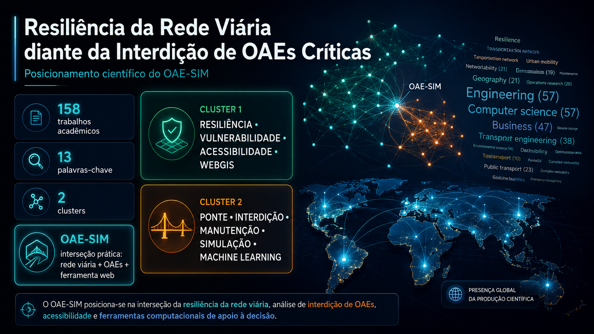
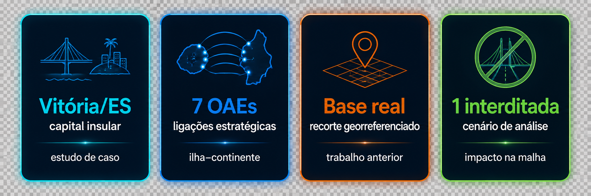
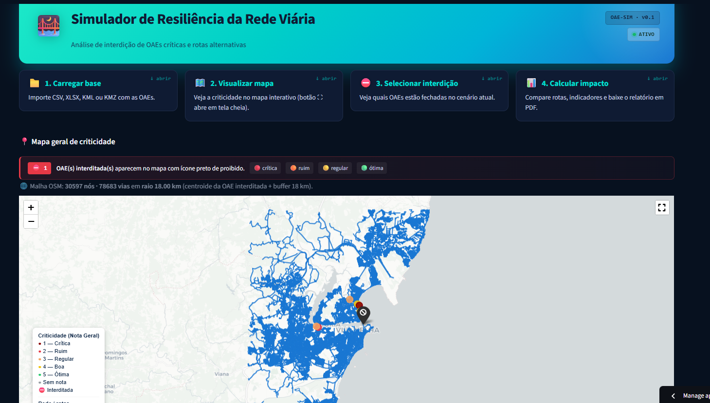

OAE-SIM · Resiliência de redes viárias
Resiliência da Rede Viária diante da
Interdição de OAEs Críticas
OAE-SIM | simulação web, análise de redes e priorização de manutenção
Quando uma OAE crítica é interditada, a rede ainda pode ter caminho — mas com desvio operacional elevado.
Como medir o impacto da interdição na malha?

Posicionamento científico
Posicionamento científico do OAE-SIM
A bibliometria mostra o trabalho na interseção entre resiliência de redes, pontes/OAEs, WebGIS, simulação e apoio à decisão.
OAE-SIM = rede viária + OAEs + ferramenta web
Estudo de caso · Vitória/ES
Vitória/ES: capital insular e 7 OAEs estratégicas
Sete OAEs urbanas escolhidas pela localização nas conexões entre ilha e continente.

Fluxo metodológico
Fluxo metodológico do OAE-SIM
O sistema transforma uma base de OAEs em uma simulação de impacto na rede viária.
Relatórios / base de OAEs
Dados de inspeção e cadastro
Base + mapa de criticidade
Georreferenciamento + Nota Geral
Rede viária
Grafo derivado do OpenStreetMap
Interdição simulada
Remove arestas próximas da OAE
Rotas alternativas
Recálculo do caminho mínimo
Impacto na resiliência
Proxy de impacto funcional local
Sob o capô: base georreferenciada de OAEs → malha viária do OpenStreetMap → rede como grafo → interdição remove arestas próximas da OAE → recálculo de rotas → resultados como proxy de impacto funcional local.
MVP funcional
OAE-SIM: simulador web funcional
Não ficou apenas no artigo: um MVP web que executa simulações, calcula rotas alternativas e gera relatórios.

Carregar base
CSV · XLSX · KML · KMZ
Visualizar
Criticidade + malha viária
Selecionar interdição
Uma ou múltiplas OAEs
Calcular impacto
Rota original × alternativa
Simulação geral
Cenários em lote
Gerar PDF
Relatório consolidado
Resultados
Resultados consolidados das simulações
A rede manteve rotas alternativas em todos os cenários — mas com desvios operacionais expressivos.
Ter rota alternativa não significa baixo impacto.
Priorização & conclusão
Priorizar não é só olhar a estrutura — é olhar a rede
O OAE-SIM combina condição estrutural e impacto funcional para apoiar manutenção, contingência e planejamento.
Criticidade estrutural ≠ criticidade sistêmica.
OAE-SIM apoia manutenção, contingência e decisão.